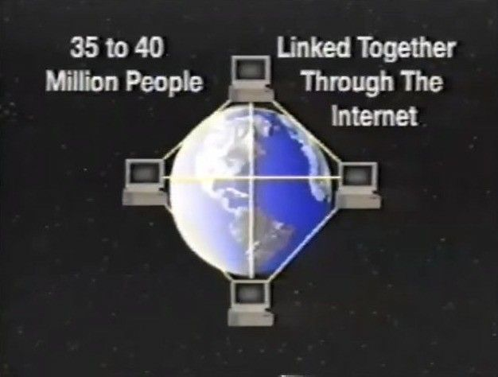

VPN Fundamentals
A practical primer on how VPNs work, how to pick a provider you can actually trust, and how to set one up and test it yourself.
"A VPN is a little like using a friend's address to get your kids into a better school district, except here the friend is usually a stranger you are paying."

WHAT IS A VPN?
A VPN (virtual private network) creates an encrypted tunnel between your device and a server run by the VPN provider. Think of it like putting on a shield before walking into enemy territory — you do not know what will come your way, but you keep yourself covered.
In plain English:
- Normally: You → Website (the website sees your IP).
- With a VPN: You → VPN Server → Website (the website sees the VPN's IP, not yours).
Example: normally, typing google.com sends your request straight to Google's servers. With a VPN active, your request goes to the VPN provider's servers first, and those servers relay it to Google. The same logic applies to any site, including ones that might be blocked or restricted where you live. Your data and activity are still being recorded somewhere — what the encryption buys you is that it becomes much harder to link that activity back to you.
Legal note: VPNs are legal in most countries but restricted in places like Iran, Russia, China, and Turkey. Check your local laws.
WHAT A VPN DOES
- Hides your browsing from your ISP, who then see only encrypted traffic.
- Changes your apparent location by connecting to servers elsewhere.
- Lets you reach geo-restricted services, like a US-only Netflix catalog, by connecting to a server in that country.
- Lets you download torrents in places where torrent traffic is blocked outright or deliberately slowed by the ISP.
- Lets you reach websites blocked in your country, because your traffic appears to come from wherever the VPN server sits.
- Makes your information harder to read, which makes you a less inviting target for fraud.
- Protects you while traveling, when you may not know local laws or policies and don't want to paint a target on your back.
WHAT A VPN DOES NOT DO
Your VPN provider CAN see your activity. You are shifting trust from your ISP to your VPN provider, so choose wisely.
A VPN does NOT make you anonymous. It makes you private from your ISP, not from the VPN provider.
If your VPN suddenly crawls, treat it as a warning sign — slow VPN traffic can mean someone is poking at your data.
USING A SELF-HOSTED VPN ON A VPS
You can rent a VPS and install VPN server software on it yourself, effectively becoming your own VPN provider. Doing this is a technical, legal, and political decision all at once, so go in with your eyes open. Looking for a commercial VPN or VPS instead? See VPN & VPS Providers. If you want to set up the server itself, see Part 4: VPS & Self-Hosting.
The downside — more traceable: a self-hosted VPN on a personally rented VPS gives you a single IP address used only by you. Commercial VPN providers use shared server IPs that mix many users' traffic, which makes it hard to link specific activity back to any one person. So it's a trade-off — rolling your own gives you control, while a good commercial VPN gives you a crowd to hide in.
HIGHER LEVELS OF PROTECTION
A VPN is a solid shield, but it is not the only one.
An open-source toolkit that helps you stand up your own private VPN server quickly, so you aren't trusting anyone else's.
Triple-encrypted. Your traffic bounces through three separate computers before reaching its destination, which makes tracing it back to your real machine extremely difficult. A regular VPN just swaps your IP for one other IP; Tor wraps it in three layers.
Networks talk through ports, which you can picture as little doors — different doors carry different kinds of traffic. OpenVPN can run on almost any port, including the one ordinary secure web traffic uses, so configured that way, activity like torrenting can blend in and look like plain web browsing from the outside.